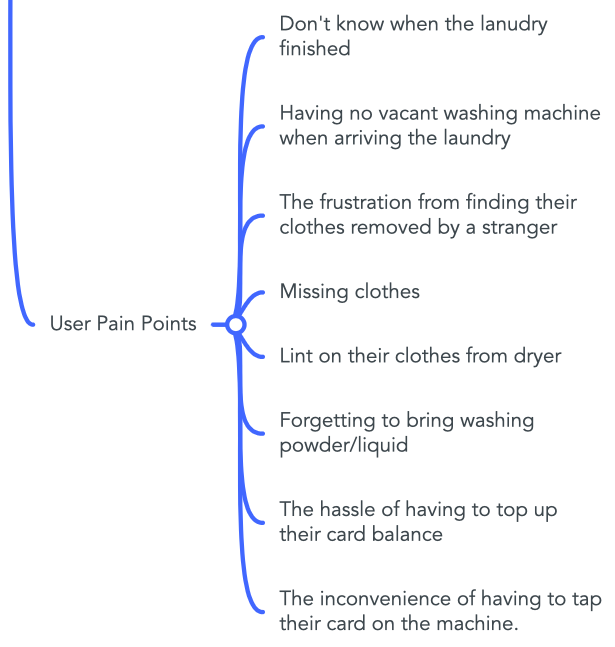
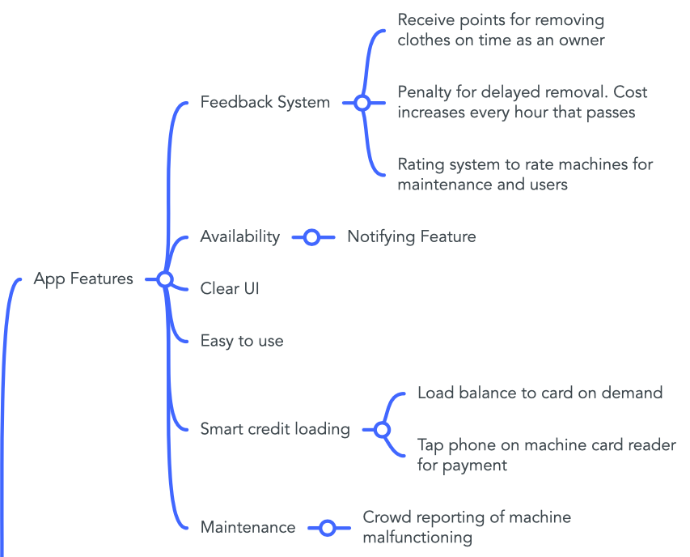

Marcus Wong
- About
-
Projects
- Project 1 - Smart Landry
Project 1 - Smart Landry
Introduction
Smart Landry is a mobile Application which aim to assist UST student who stay on campus in doing landry. By providing functions including
- Machine availability browsing
- Notification upon landry completion
- Queueing system
- Laundry balance checking
- Custom item checklist
the goal of this app is to enhance student's experience in using the landry facilities as well as to promote smart living ideology on our campus.
Brainstorming/Gathering User POV - why we come up with this idea?
At the beginning of our disscusion several problems on the campus were being addressed.
First is the navigation problem. As campus is huge and the structure is complicated, it is often difficult to locate a room and sometime get lose before midterm/exams. Even there is exist solution to this problem, the Path Advisor, most people agree that it isn't really a effective solution to the navigation problem, as the direction indication could often could confusing in the app.
Mindmap - Navigation problem

Another campus problem that was being addressed is the queueing problem, as we also find that queueing in canteen or library is also a painful process that we often have to face.
Mindmap - Queing problems

The last campus problem, which is the one we develop our project from, is the landry room problem. From our interview and chat with our fellow UST students, many of us who stay or have stayed on the campus found that landry is a problem.
First, knowing when to pickup clothes is inconvenience. For now, there doesn't exist any system which connects the landry machines to the internet to let us know if our landry is finished. Therefore, student will have to setup their own timer or visit the landry room to check. However, student may sometimes forget to setup the timer and visiting the landry room is very time consuming, making pickup clothes difficult. Worse, the student may entirely forget to collection their clothes and occupy the washer unnecessarily, forcing other users to wait.
Picture from our storyboard

Second, finding available machine is inconvenience. Since the only way know if there is any available washer/dryer is to visit landry, student may just waste a lot time to come and go between the landry room only to find no machine is available.
Survey conducted by one of our group member

There also other problems regarding the landry room on campus. The mindmap below summarizes the complaint that we have garthered.
Mindmap - Landry Problem 
Making Our Prototype
Functionality
Mindmap - App features 
UI/UX
For the UI of our app, there were two proposed layout.
Layout 1

Above is the first layout that was proposed. This layout display all of the information to the screen and provide a intuitive display for the user. However, this layout is also somewhat overwhelming for the user as too many information is displayed at once and it is difficult for the user to digest.
Layout 2

This is the second layout that was proposed and the one we adopt. Referencing the layout of other app on the market, enough information can be displayed to screen without being overwhelming. This layout is also easily fit in small screen and easy for user to perform different operations.
The final product

Prototype Video
This video demonstrates the user flow and covers all features that we designed on our app.
Reflection
Despite it is the first project in HCI course and my group have worked for only a week of time, I have already gain a lot and putting different HCI theories in practice when completing this projection. As my role in this project is to complete the paper prototype as well as the prototype video